Get to know the students and coaches behind Polytechnic Puzzle Pieces.
Meet the Team
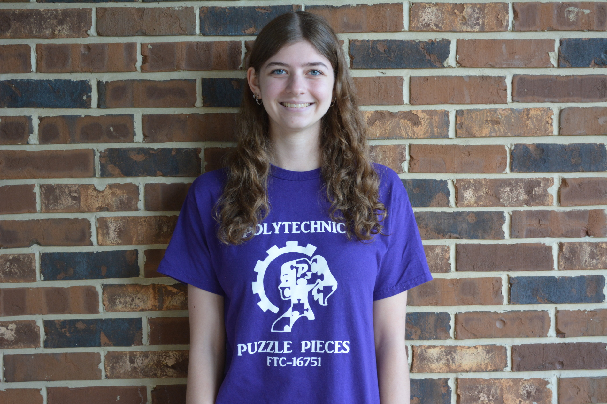
Olivia
Programmer / Documentation
Olivia is in 12th grade at Edwardsville High School. She has been on the team for 4 years.
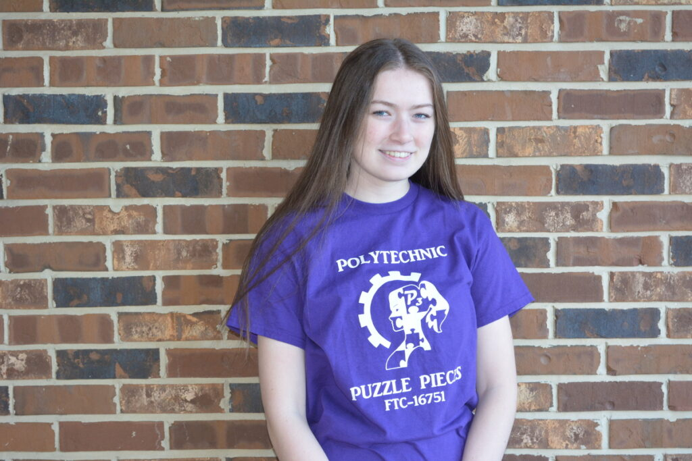
Maddie
Builder / Drive Team
Maddie is in 12th grade at Edwardsville High School. She has been on the team for 4 years.
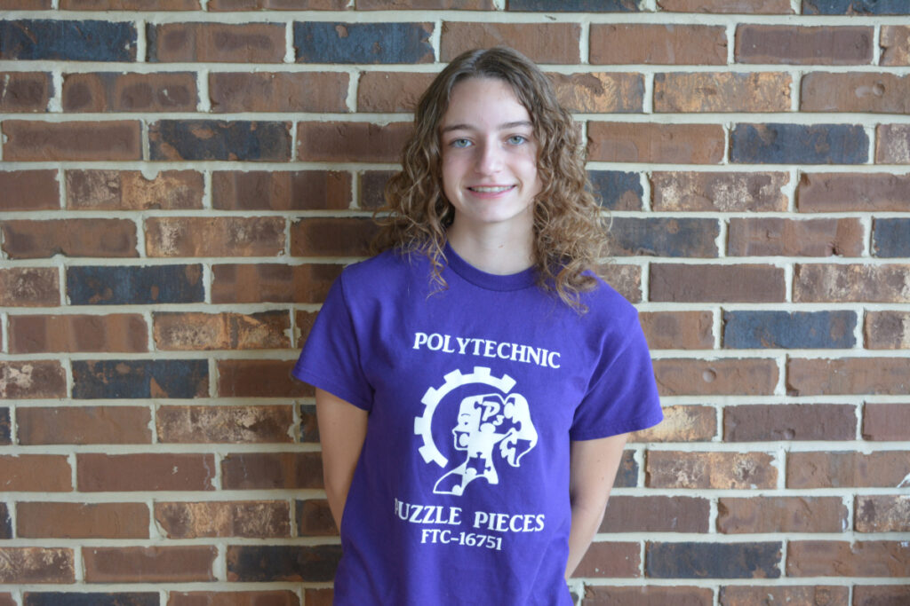
Tori
Builder
Tori is in 10th grade at Triad High School. She has been on the team for 4 years.
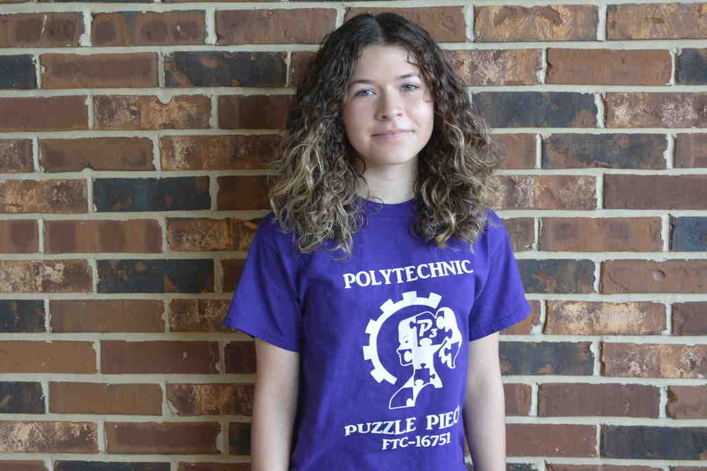
Ava
CAD / Electrical / Media
Ava is in 10th grade at Triad High School. She has been on the team for 2 years.
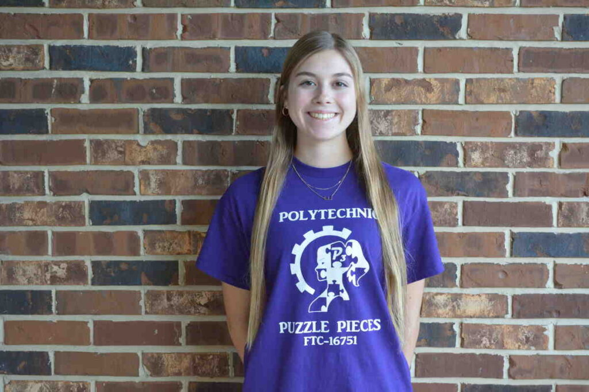
Ella
Builder / Drive Team
Ella is in 12th grade at O'Fallon Township High School. She has been on the team for 2 years.
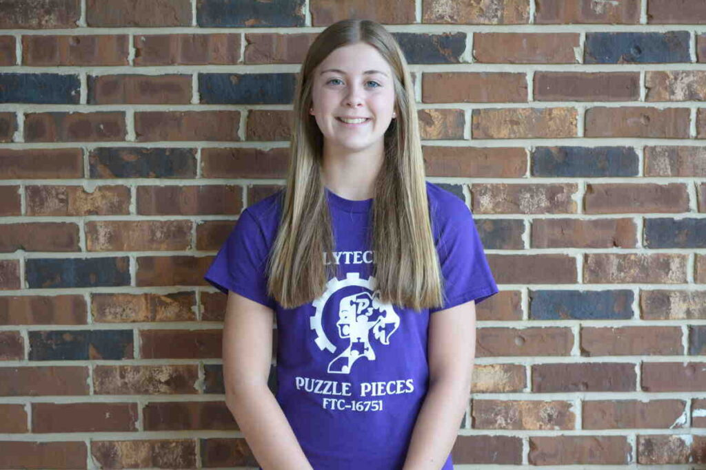
Grace
Builder / Documentation
Grace is in 9th grade at O'Fallon Township High School. She has been on the team for 2 years.
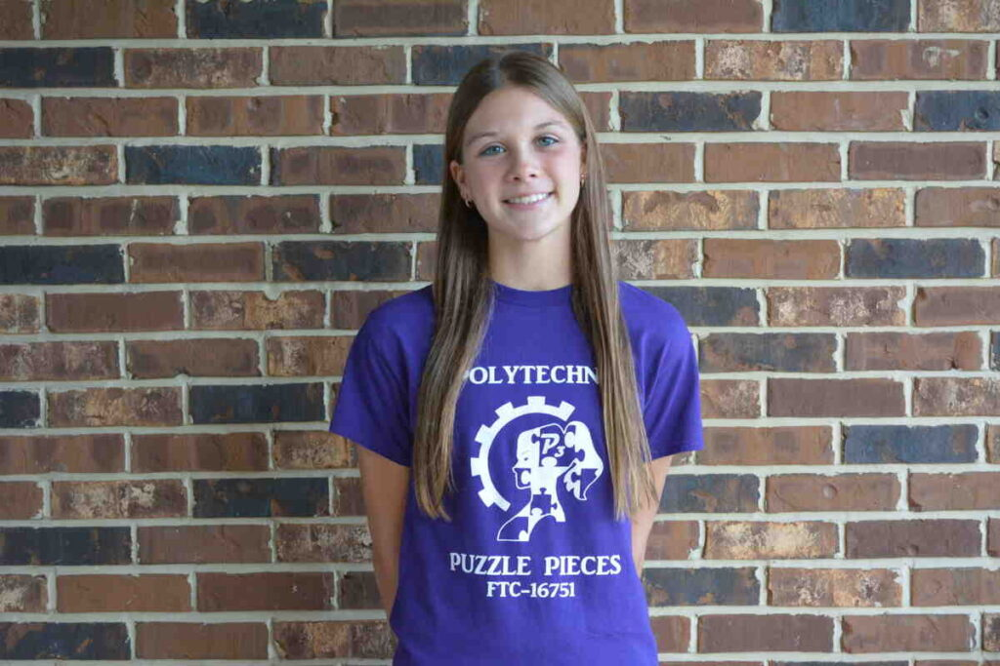
Maggie
Builder / Documentation
Maggie is in 7th grade at Fulton Middle School. She has been on the team for 2 years.
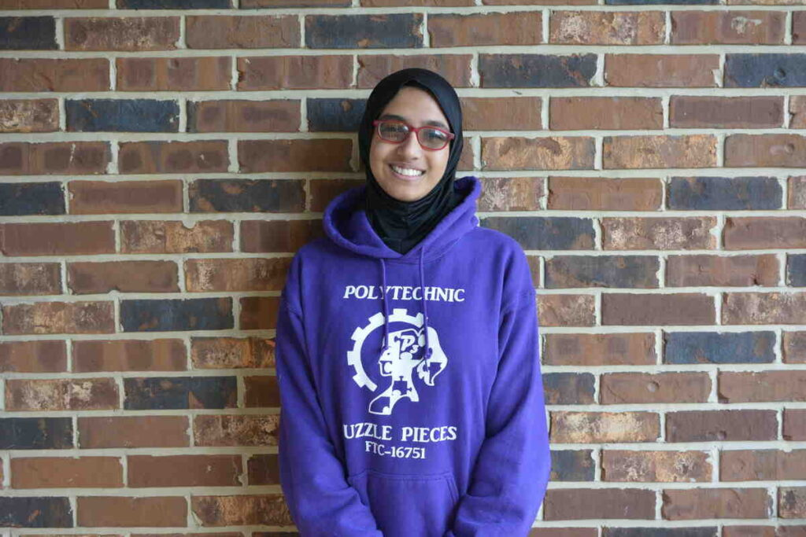
Raida
Builder / Electrical
Raida is in 12th grade at O'Fallon Township High School. She has been on the team for 2 years.
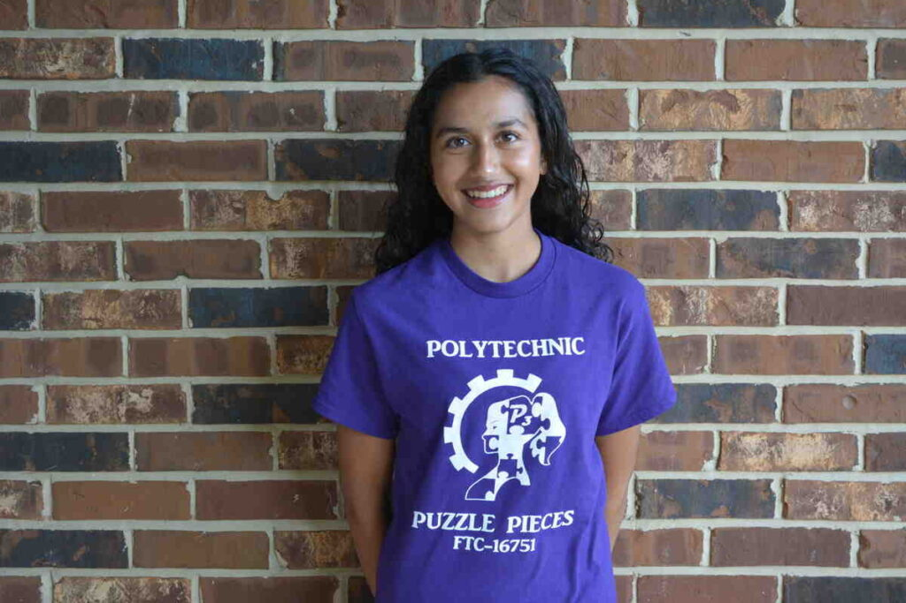
Tara
Builder / Documentation
Tara is in 11th grade at O'Fallon Township High School. She has been on the team for 3 years.
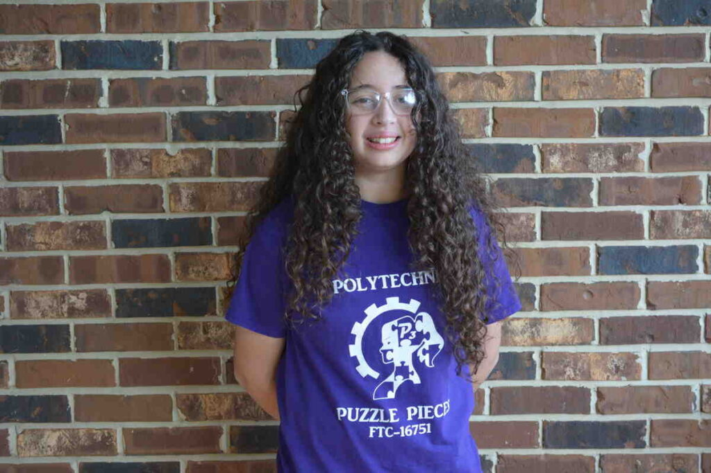
Sabreen
Documentation / Media
Sabreen is in 9th grade at O'Fallon Township High School. She has been on the team for 2 years.
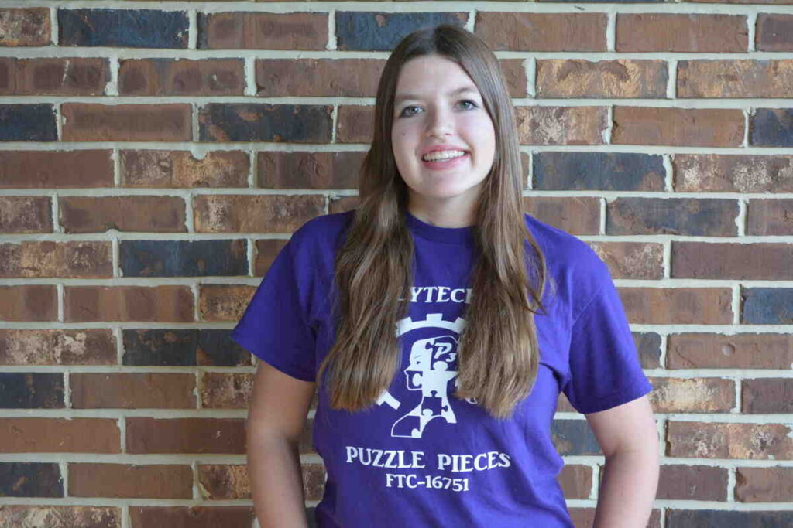
Stella
Builder / Documentation / Drive Team
Stella is in 9th grade at O'Fallon Township High School. She has been on the team for 1 year.
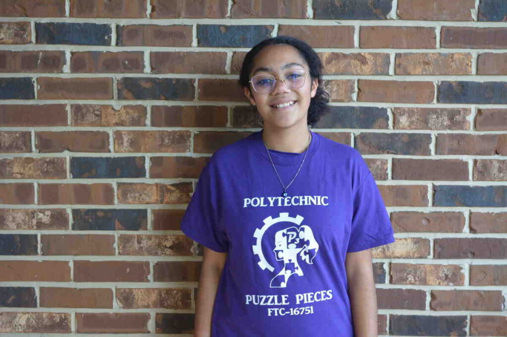
Bella
Builder / Documentation
Bella is in 8th grade at Fulton Middle School. She has been on the team for 1 year.
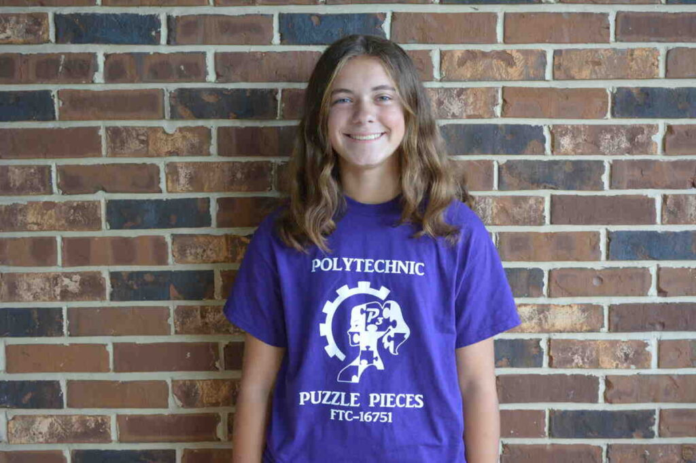
Kylee
Documentation / Drive Team
Kylee is in 8th grade at Fulton Middle School. She has been on the team for 1 year.
Meet the Coaches
Mr. George
Head Coach
Mr. George has been coaching within the FIRST program for over 10 years. He is currently coaching 3 different FTC teams: Polytechnic Puzzle Pieces, Gear Girls, and Skyline Robotics. He works as an Experienced Software Engineering Manager at Boeing.
Ms. Megan
Head Mentor
Ms. Megan has been mentoring P3 for 4 years. She graduated from Missouri S&T in 2022. She is a member of the FIRST Alumni, and she competed in FTC with the retired team OOPS. She works as a Manufacturing Engineer at Boeing.